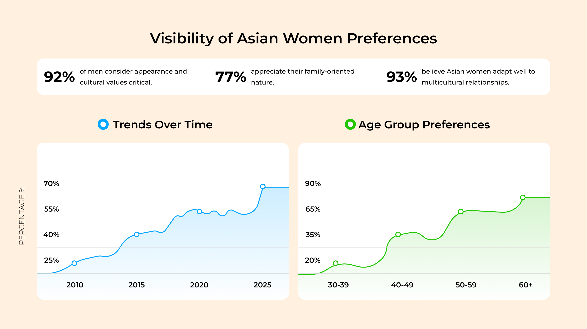

Why More & More American Men Over 50 Are Turning to Asian Women
David Martinez @davidmartinez85
In today’s world, more and more men are seeking partners outside their home countries, and interest in Asian women is growing significantly. Their elegance, kindness, and family values make them ideal life companions. We decided to learn more about this phenomenon and spoke with Victoria, who manages a dating platform.
Her platform Asia****.com connects Western men with Asian women who are looking to build serious relationships.
One of the platform’s standout features is a mandatory pre-registration survey, created by experts and psychologists, which every new member must complete. This survey, coupled with user verification, ensures that only those genuinely seeking meaningful connections gain access. As a result, the community has grown steadily, emphasizing authenticity and long-lasting relationships.
Victoria, why have Asian women become so popular among men?
Asian women are known for their natural beauty and grace. They often have petite figures, harmonious facial features, and refined manners. Their upbringing instills respect for elders, politeness, and a willingness to compromise. In surveys conducted on Asia****.com, men often noted that they admire how Asian women uphold traditional values and take relationships seriously.

Another unique advantage is that Asian women maintain their youthful appearance for a long time. Thanks to their self-care habits, genetics, and lifestyle, they often look significantly younger than their actual age. For instance, many of them at 50 look like they are 35. This trait makes them even more attractive to men who value femininity and natural beauty.
Additionally, Asian women are often the first to initiate contact. In their culture, there are no stereotypes or restrictions suggesting that only men should take the first step. They are open to communication and aren’t afraid to show initiative, which is a pleasant surprise for many Western men.
Asian women also frequently seek partners who are significantly older than they are. For them, a man’s age is a key factor as it symbolizes experience, wisdom, and the ability to take care of a family. They also value the sense of security and stability that older men can provide.
Why are Asian women so interested in marriage?
In many Asian cultures, marriage is more than just a personal choice—it’s a deeply rooted tradition. Asia****.com highlights how Asian women are often raised in families where family values are of utmost importance. From a young age, they are taught to respect their husbands and do everything possible to ensure he feels comfort, warmth, and support from his family. They view a husband as a figure of strength, wisdom, security, and protection for his family.
These values often lead Asian women to seek partners among Western men. They see Western men as embodying these qualities—they are strong, responsible, wise, and capable of providing a stable future for their families.
Moreover, Asian women are highly adaptable. They quickly adjust to new cultures and lifestyles, making them ideal for Western men who appreciate openness and a willingness to embrace change.
What attracts men most to Asian women?
Based on surveys conducted on Asia****.com, the main reasons include:
Traditional family values
Asian women grow up in cultures where marriage and family are the foundation of life. They understand the importance of supporting their partner and maintaining harmony at home.
Tenderness and care
These women are incredibly attentive to their husbands’ needs. They know how to listen, support, and communicate even in the most challenging situations.
Household skills
Asian women are excellent cooks and always make time for family meals. Even with a job, they skillfully balance domestic responsibilities, creating a cozy and welcoming atmosphere. and are willing to compromise, helping to avoid conflicts in relationships.
Initiative in relationships
Asian women are not afraid to take the first step. They are open to starting a conversation and building connections on their own, which adds ease and charm to the dating experience.
What advice would you give to men who want to meet an Asian woman?
Be polite and open to communication! Asia****.com provides tips on how Asian women greatly value sincerity and attention to detail. They are interested in meeting men who are ready for serious relationships and are happy to communicate if you show respect.
Verdict
After talking with Victoria, we gained exclusive access to her Asia******.com community. Our conclusion?
Asian women genuinely embody a blend of remarkable qualities that make them exceptional partners. They are caring, naturally beautiful, value family above all, maintain a youthful spirit, feel confident taking the first step, and unfailingly stand by their husbands. It’s hardly surprising that more men are drawn to them every day.
We extend our best wishes to Victoria and her team for continued success.
Ready to meet someone special? Victoria has a sweet deal for our readers—join this members-only community today and score 20 bonus credits, along with a generous 60% discount on your first credit purchase. Don’t miss out on what could be the start of something amazing!
Register Now and get 20 FREE credits